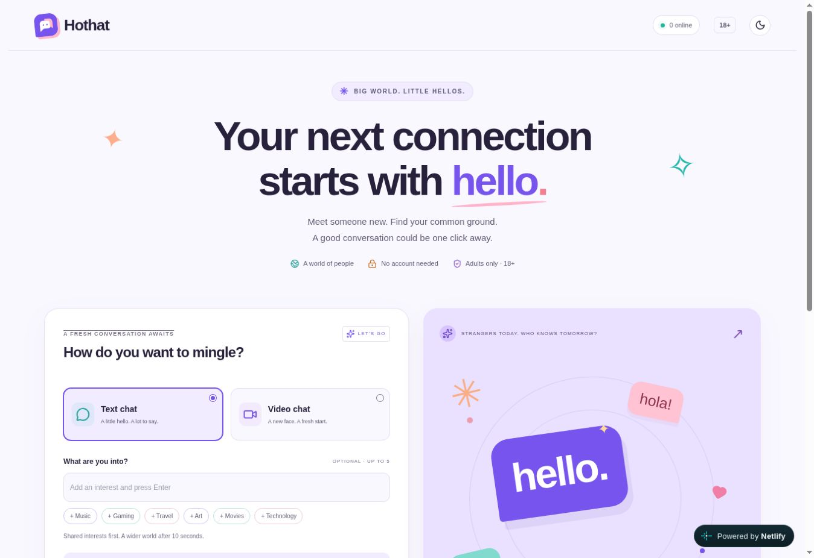

LIVE SIDE PROJECT / 01
Hothat↗
A new connection starts with hello.
A fun project about spontaneous conversations. A simple place to meet someone new through text and video chat modes, with shared interests to help break the ice.
hothat.netlify.app

MADE FOR A LITTLE SERENDIPITYOpen live project